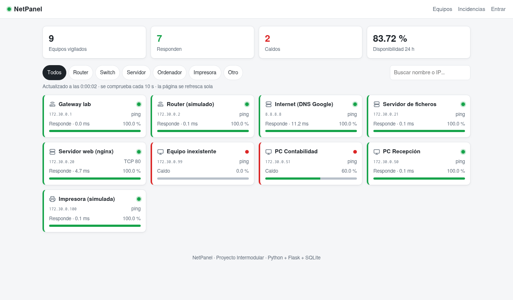

Ruta completa · de cero a la defensa
Cómo hacerlo todo desde cero
El orden de trabajo, de principio a fin: qué haces, en qué orden, por qué lo haces así y qué tienes que guardar como prueba. Si sigues esta página, cada cosa del proyecto tendrá un motivo que podrás explicar.
La idea principal: el tribunal no solo valora que la aplicación funcione. Valora que sepas por qué es así. Por eso, en cada paso apunta tres cosas en tu diario: qué decidí, qué otras opciones había y cómo comprobé que funcionaba. Con esas notas escribes la memoria casi sola.
Mapa de la ruta
La fase 7 (seguimiento del tutor) no va al final: dura todo el proyecto y vale el 25 % de la nota.
Fase 0 Entender qué te piden
Antes de escribir código hay que saber con qué te van a evaluar. Todo sale de la guía oficial del módulo:
| Qué dice la guía | Qué significa para ti |
|---|---|
| Modalidad a) investigación experimental | Haces una memoria de 15–20 páginas (sin contar anexos) y una defensa presencial de 20 min + 10 min de preguntas. |
| Avisar al tutor de la modalidad antes del 20 de noviembre | Hazlo ya. Tienes un mensaje de ejemplo en la Guía del proyecto. |
| Identificar una necesidad, plantear una solución y justificar las decisiones | Por eso existe la fase 4: cada decisión necesita un motivo escrito. |
| Significativo, inclusivo, integrador, proporcionado y observable | Debe usar lo que aprendiste en varios módulos (redes, sistemas, programación, BD, seguridad), poder probarse y dejar algo que se pueda evaluar: app, laboratorio, memoria y web. |
| Fuentes variadas y contrastadas, sin plagio | Lleva una lista de fuentes desde el primer día (más abajo). |
| Nota: 40 % idea y desarrollo · 25 % seguimiento · 35 % memoria y defensa | Hay que aprobar la memoria (≥ 5) para poder defender, y aprobar las dos partes. |
El planteamiento en una frase (apréndetelo)
Problema: en una red pequeña nadie sabe que un equipo se ha caído hasta que alguien se queja. Solución: una web que comprueba cada pocos segundos si cada equipo responde (ping o puerto TCP), muestra su estado e IP, guarda el historial y calcula su disponibilidad. Comprobación: un laboratorio con Docker en el que apago equipos y mido cuánto tarda en detectarlo.
Fase 1 Preparar tu equipo
Instala estas cuatro herramientas. Son gratis y son las que usa cualquier desarrollador:
Python 3.10 o superior
El lenguaje de la app. En Windows marca «Add python.exe to PATH» al instalar.
Git
Guarda el historial de cambios. Cada versión que hagas es un commit, y esos commits sirven como evidencia.
VS Code
Editor de código, con la extensión «Python».
Cuenta de GitHub
Para publicar el código y la web. Ya tienes el repositorio.
git clone https://github.com/melvinfranco99/panel-monitorizacion-equipos.git cd panel-monitorizacion-equipos python -m venv .venv .venv\Scripts\activate pip install -r requirements-dev.txt python herramientas.py demo # crea datos de ejemplo python run.py # abre http://127.0.0.1:5000 (admin / admin) python -m pytest # deben pasar los 22 tests
git clone https://github.com/melvinfranco99/panel-monitorizacion-equipos.git cd panel-monitorizacion-equipos python3 -m venv .venv source .venv/bin/activate pip install -r requirements-dev.txt python herramientas.py demo python run.py # http://127.0.0.1:5000 (admin / admin) python -m pytest
¿Por qué un entorno virtual (.venv)? Así las librerías del proyecto no se mezclan con las del sistema y cualquiera puede reproducirlo con requirements.txt. Es una pregunta típica del tribunal.
Evidencia que guardas: una captura del panel funcionando en tu equipo y la salida de los tests.
Fase 2 Entender cómo funciona
La app tiene dos partes que trabajan a la vez y comparten una base de datos:
Lo que hace el monitor en cada vuelta
- Lee de la base de datos los equipos activos.
- Los comprueba en paralelo (
ThreadPoolExecutor) para no esperar uno tras otro. Si un equipo tiene puerto, abre una conexión TCP; si no, haceping. - Guarda cada resultado en la tabla
comprobaciones(fecha, responde sí/no, latencia). - Decide el nuevo estado con la regla de los 2 fallos seguidos y, si cambia, lo apunta en
eventosy puede avisar por Telegram. - Borra el historial con más de 30 días y espera al siguiente ciclo.
La regla de estados (el corazón del proyecto)
def calcular_estado(estado_actual, fallos_consecutivos, responde, fallos_para_caido):
if responde:
return "up", 0 # responde → «Responde», contador a 0
fallos = fallos_consecutivos + 1
if fallos >= fallos_para_caido:
return "down", fallos # 2 fallos seguidos → «Caído»
return estado_actual, fallos # 1 fallo → aún no lo marca caído
Por qué 2 y no 1: un solo ping puede perderse sin que el equipo esté caído (red saturada, Wi-Fi). Con 2 seguidos casi no hay falsas alarmas, y la caída se detecta en menos de un minuto. Es un compromiso entre rapidez y falsos positivos, y se puede cambiar con MONITOR_FALLOS_PARA_CAIDO.
La fórmula de la disponibilidad
Disponibilidad (%) = comprobaciones con respuesta ÷ comprobaciones totales × 100
En SQL: SELECT AVG(responde) * 100 FROM comprobaciones WHERE equipo_id = ? AND fecha >= ?. Como responde vale 1 o 0, la media ya es la proporción.
Para ver fichero a fichero cómo está hecho, tienes El código explicado. Léelo con el código abierto al lado.
Fase 3 Construirlo por versiones
La mejor forma de entender la app y poder defenderla es rehacerla tú por partes en una carpeta aparte (por ejemplo mi-version/), comparando con el código del repositorio. Cada versión añade una sola idea, funciona por sí misma y acaba en un commit. Esto además es tu metodología: desarrollo iterativo e incremental, y así lo puedes contar en la memoria.
v0 · Un script que hace ping git commit -m "v0: ping a una IP"
import subprocess, platform
def hacer_ping(ip):
n = "-n" if platform.system() == "Windows" else "-c"
r = subprocess.run(["ping", n, "1", ip], capture_output=True)
return r.returncode == 0
print(hacer_ping("192.168.1.1"))
v1 · Varios equipos y un bucle v1
v2 · Guardar en SQLite v2
CREATE TABLE equipos (id INTEGER PRIMARY KEY, nombre TEXT, ip TEXT UNIQUE, estado TEXT); CREATE TABLE comprobaciones (id INTEGER PRIMARY KEY, equipo_id INTEGER REFERENCES equipos(id) ON DELETE CASCADE, fecha TEXT, responde INTEGER, latencia_ms REAL);
v3 · Una web con Flask v3
from flask import Flask, render_template
app = Flask(__name__)
@app.route("/")
def inicio():
equipos = conectar().execute("SELECT * FROM equipos").fetchall()
return render_template("inicio.html", equipos=equipos)
v4 · Monitor en segundo plano + estados v4
v5 · Historial, disponibilidad y gráfica v5
v6 · Rapidez y robustez v6
v7 · Seguridad, tests y despliegue v7
No hace falta que tu versión quede idéntica. Lo que importa es que cada parte la hayas escrito o modificado tú y sepas por qué está ahí. Además, añade una mejora propia (ideas en la Guía del proyecto): es tu aportación original, y la guía pide mencionarla en la defensa.
Fase 4 Hacer las cosas razonadas y justificadas
Esta fase dura todo el proyecto. Un proyecto «justificado» sigue siempre la misma cadena, y cada eslabón deja algo escrito:
Herramienta 1 · El diario de proyecto
Un fichero DIARIO.md en tu repositorio. Escribe una entrada cada día que trabajes, aunque sean 5 líneas. Te sirve para la memoria, para las entregas al tutor y para responder «¿qué dificultades tuviste?».
## 2026-11-20 · v1 (bucle de varios equipos) ⏱ 2 h Hecho: bucle con 5 equipos cada 10 s. Problema: con 3 equipos apagados la vuelta tarda 3 s (1 s de timeout cada uno). Causa: se comprueban uno detrás de otro. Solución / pendiente: comprobarlos en paralelo (lo haré en v6). Fuente consultada: docs.python.org/3/library/concurrent.futures.html Evidencia: captura 2026-11-20_bucle.png · commit a1b2c3d
Herramienta 2 · El registro de decisiones
Cada vez que elijas entre dos opciones, rellena esta ficha. Es lo que más se nota en un proyecto razonado:
DECISIÓN: Base de datos
Contexto: necesito guardar equipos e historial; red pequeña; un solo servidor.
Alternativas: SQLite · MySQL/MariaDB · ficheros CSV
Criterios: facilidad de instalación, fiabilidad, consultas SQL, recursos.
Elección: SQLite.
Motivo: no necesita servidor, es un único fichero fácil de copiar, admite SQL
completo y para unos pocos cientos de equipos sobra.
Consecuencia / límite: si hubiera muchos usuarios escribiendo a la vez,
migraría a PostgreSQL.
Las decisiones de NetPanel, ya razonadas (cópialas a tu manera en la memoria, apartado 4.3 de la plantilla):
| Decisión | Alternativas | Por qué esta |
|---|---|---|
| Python + Flask | Django, PHP, Node.js | Flask es pequeño y se entiende entero; Django trae mucho que no se usa (ORM, panel admin). Python ya se ve en el ciclo. |
| SQLite | MySQL, PostgreSQL, CSV | Sin servidor, un fichero, SQL completo. Con el modo WAL se puede leer mientras se escribe. |
| Ping (ICMP) + TCP | SNMP, agentes instalados | No hay que instalar ni configurar nada en los equipos vigilados. TCP sirve cuando el ping está bloqueado o se quiere comprobar un servicio. |
| 2 fallos seguidos = caído | 1 fallo, 3 fallos | 1 da falsas alarmas; 3 tarda más en avisar. 2 detecta en menos de 1 minuto con intervalo de 30 s (medido: 21 s con 10 s). |
| Hilo + ThreadPoolExecutor | cron, Celery, asyncio | Sin dependencias externas ni servicios extra; el paralelismo con hilos va bien porque la espera es de red, no de CPU. |
| Gráfica en SVG propio | Chart.js desde un CDN | Funciona sin Internet (redes aisladas de empresa) y no carga código de terceros. |
| gunicorn con 1 proceso y 8 hilos | Varios procesos | Con varios procesos habría varios monitores comprobando lo mismo a la vez. |
| Docker para el laboratorio | Máquinas virtuales, equipos físicos | 8 «equipos» en segundos con pocos recursos, y se puede repetir igual las veces que haga falta. |
Herramienta 3 · Hipótesis que puedes medir
Tu modalidad es investigación experimental, así que plantea hipótesis y compruébalas con datos:
| Hipótesis | Cómo la mides | Resultado de referencia |
|---|---|---|
| H1. Detecta la caída de un equipo en menos de 1 minuto. | Hora del docker stop frente a hora del evento en Incidencias. | 21 s (intervalo 10 s, 2 fallos) |
| H2. Detecta la recuperación en menos de un ciclo. | Hora del docker start frente a hora del evento. | 7 s |
| H3. Comprobar en paralelo reduce el tiempo de ciclo. | Duración del ciclo con 10 equipos caídos, en serie y en paralelo. | Mídelo tú (v1 frente a v6) |
| H4. La disponibilidad calculada coincide con la real. | Apagar un equipo un tiempo conocido y comparar el % con el cálculo manual. | Mídelo tú |
Herramienta 4 · La lista de fuentes
Cada vez que algo te sirva, apúntalo en el momento en formato APA. Fuentes fiables para este tema: RFC 792 (ICMP), documentación oficial de Python, Flask y SQLite, OWASP Top 10, la documentación de Zabbix y Nagios (para comparar) e INCIBE (seguridad para pymes). Contrasta lo que leas en blogs con una fuente oficial.
Fase 5 Probar y medir
- Pruebas automáticas:
python -m pytest. Explica qué prueba cada grupo de tests (regla de estados, validación de IP, login, CSRF, API). - Laboratorio controlado: monta la red Docker con
bash lab/lab_sin_compose.sh arrancar(pasos en Usar la app). - Casos de prueba: para cada uno escribe acción → resultado esperado → resultado obtenido. Por ejemplo, CP2:
docker stop lab-pc-contabilidad→ «Caído» en menos de 1 minuto → «Caído» a los 21 s. - Prueba real: en tu casa, con el router, tu móvil y un DNS público. Comprueba qué pasa cuando apagas el Wi-Fi del móvil.
- Evidencias: capturas con fecha en el nombre, un vídeo corto de una caída y su recuperación, y la salida de los tests. Todo va a anexos y a la defensa.

Fase 6 La plantilla y la memoria
La plantilla oficial es la que te da el campus (módulo de Proyecto). Es obligatoria, sobre todo la portada. Si aún no la tienes, empieza con la plantilla de abajo, que ya cumple el formato de la guía, y pasa el texto a la oficial cuando la tengas.
Formato obligatorio (ya aplicado en la plantilla)
| Regla de la guía | Cómo se hace en Word | En LibreOffice Writer |
|---|---|---|
| Calibri 11 o Times New Roman 12 | Inicio → Estilos → clic derecho en «Normal» → Modificar | F11 → «Estilo de párrafo predeterminado» → Editar |
| Interlineado 1,5 y texto justificado | En el mismo estilo «Normal» → Formato → Párrafo | En el mismo estilo → Sangrías y espaciado / Alineación |
| Márgenes: sup., inf. y dcho. 2 cm; izq. 3 cm | Disposición → Márgenes → Márgenes personalizados | Formato → Estilo de página → Página |
| Número de página abajo a la derecha (sin número en la portada) | Insertar → Número de página → Final de página → derecha; marca «Primera página diferente» | Insertar → Pie → Campo → Número de página; la portada con estilo «Primera página» |
| Toda figura y tabla con leyenda | Referencias → Insertar título (numeración automática) | Clic derecho en la imagen → Insertar leyenda |
| Índice con páginas | Referencias → Tabla de contenido (usa los estilos Título 1/2) | Insertar → Índice → Índice general |
| Entrega en PDF | Archivo → Guardar como → PDF | Archivo → Exportar como PDF |
Consejo: no pongas nunca el formato a mano en cada párrafo. Usa estilos («Normal», «Título 1», «Título 2»). Así el índice se genera solo y todo queda uniforme.
Cómo escribir la memoria, paso a paso
- Copia el esqueleto de la plantilla y pon tu nombre, tu tutor y tu ciclo en la portada.
- Empieza por el Desarrollo (apartado 4), porque es lo que mejor conoces: usa el diario, el registro de decisiones y los casos de prueba.
- Después escribe los Objetivos y comprueba que el Desarrollo responde a cada uno.
- Luego la Introducción (con citas) y la Justificación.
- Escribe las Conclusiones objetivo por objetivo: «El objetivo 2 se cumplió: la caída se detectó en 21 s (Tabla 3)».
- El Resumen, el último: es un resumen de todo lo anterior.
- Actualiza el índice, cuenta las páginas (15–20 sin anexos), pasa el corrector y léela en voz alta.
- Mándasela al tutor antes de la entrega final y exporta a PDF.
Ya tienes un borrador con el contenido de todos los apartados en memoria/BORRADOR_MEMORIA.md, y en la Guía del proyecto verás cuántas páginas dedicar a cada uno. Reescríbelo con tus palabras: tienes que poder defender cada frase.
Reglas de redacción que se evalúan
Estilo
Impersonal o primera persona, pero siempre la misma. Frases cortas. Términos técnicos bien usados (ICMP, latencia, disponibilidad, CSRF).
Objetivos
En infinitivo, pocos y medibles: «Detectar la caída de un equipo en menos de un minuto», no «Hacer una app buena».
Citas
APA 7 en el texto: (Postel, 1981), con su entrada en la bibliografía. Nada copiado sin citar.
Figuras
Numeradas y con leyenda («Figura 3. Vista de incidencias. Fuente: elaboración propia») y citadas en el texto.
Fase 7 El seguimiento del tutor (25 %)
Un cuarto de la nota es constancia. Entrega todo lo que te pida en su fecha, ve a las tutorías colectivas semanales y, aunque no te lo pida, manda un avance breve cada dos semanas:
Asunto: Proyecto Intermodular – avance [fecha] Hola [tutor/a]: Le resumo el avance de estas dos semanas: - Hecho: [v3 y v4: web con Flask y monitor en segundo plano con estados]. - Problema y solución: [el ping bloqueaba la web → lo pasé a un hilo]. - Próximo paso: [historial y cálculo de disponibilidad]. - Duda: [¿la tabla comparativa de herramientas va en Introducción o en Desarrollo?] Repositorio: https://github.com/melvinfranco99/panel-monitorizacion-equipos Un saludo, [nombre]
Fase 8 Presentación y defensa
Solo defiendes si apruebas la memoria. Son 20 minutos como máximo, con un PPT o similar, y luego 10 minutos de preguntas. Se evalúa la expresión verbal y no verbal, el contenido, que respetes las pautas y tus respuestas.
- Haz unas 14 diapositivas siguiendo el guion de la defensa: problema → objetivos → solución → cómo funciona → pruebas → conclusiones → aportación propia.
- Prepara la demo con plan B: el laboratorio en vivo; si falla, el modo demo; si falla también, el vídeo grabado.
- Ensaya con cronómetro al menos 3 veces. Grábate para quitar muletillas.
- Repasa las 40+ preguntas respondiendo en voz alta, sin leer.
- El día de la defensa: DNI, portátil cargado, la presentación en un USB y en la nube, y el vídeo de respaldo.
Checklist por fases
Se guarda en tu navegador. Marca cada punto cuando lo hayas hecho.
- F0 · He leído la guía y he comunicado la modalidad al tutor antes del 20/11.
- F1 · La app funciona en mi equipo y los tests pasan.
- F2 · Sé explicar el ciclo del monitor, la regla de los 2 fallos y la fórmula de la disponibilidad sin mirar.
- F3 · He hecho las versiones v0–v7 (o al menos v0–v4) con un commit cada una.
- F3 · He añadido una mejora propia.
- F4 · Llevo el diario y tengo una ficha por cada decisión importante.
- F4 · Tengo 8–10 fuentes en APA.
- F5 · He medido H1–H4 en el laboratorio y tengo capturas y vídeo.
- F6 · La memoria está en la plantilla oficial, con 15–20 páginas y los 10 apartados.
- F6 · Las figuras y tablas tienen leyenda, el índice está actualizado y la he exportado a PDF.
- F7 · He enviado avances periódicos y he ido a las tutorías.
- F8 · Tengo las diapositivas, he ensayado 3 veces en menos de 20 minutos y tengo el plan B.